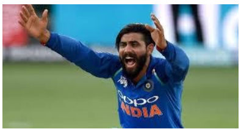

Fielding in the sport of cricket is the action of fielders in collecting the ball after it is struck by the batsman, to limit the number of runs that the batsman scores and/or to get the batsman out by catching the ball in flight or by running the batsman out.
